| 日付 | 2019年4月30日（火） - 2019年5月5日（日） | ||||
|---|---|---|---|---|---|
| 山域 | 四国の山 | ||||
| メンバー | 家族（妻、長女・8歳、長男・5歳） | ||||
| 山行形態 | 子連れ5泊6日キャンプ、ホテル泊 | ||||
| アクセス | 車、ロープウェイ | ||||
| ルート |
|
今年のGWが10連休に決まり、遠出をしてみることにする。
前後1日ずつ休みを設けて7泊8日で四国に行く計画を立てる。
しかしGW前半は数日間雨予報で、大幅な計画の変更を余儀なくされる。
毎日コロコロ変わる天気予報を見ながら出発日を伺っていたが、
4/29の夜に予報が変わり、翌日の出発を急遽決定。
今回はキャンプも実施するため、大慌てで準備を行い翌朝早朝出発する。
1日目
1泊目は石鎚ふれあいの里のキャンプ場。
草津JCTの渋滞は名阪国道で迂回したため、ほとんど渋滞無しで来れたが、
それでも到着は17時になってしまった。予報は再び雨予報に変わっており、
街中は曇りだったが山間にあるこのキャンプ場は残念ながら雨だ。
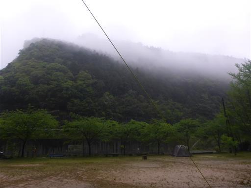
雨の中、なんとかテントとタープを張る。
タープは今回新調したもので、まだ慣れていないので、雨中で張るのに苦戦した。
雨でやることがないので、娘は「つまんねぇ」を100回以上繰り返している…
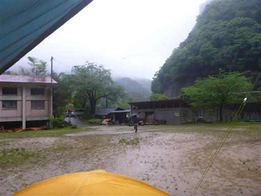
買い物する余裕もなかったので、今夜は簡易の夕飯ですます。
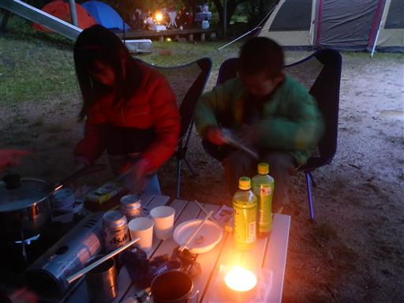
2日目
前日と全く同じ景色。今日も雨だ。
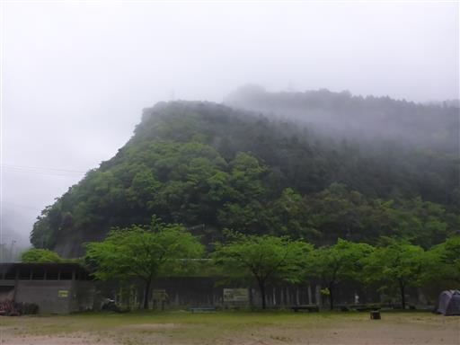
このキャンプ場は小学校跡に作られており、テントを張っているのは運動場だった場所。
駐車場は近くにあるが、車の乗り入れはできない。
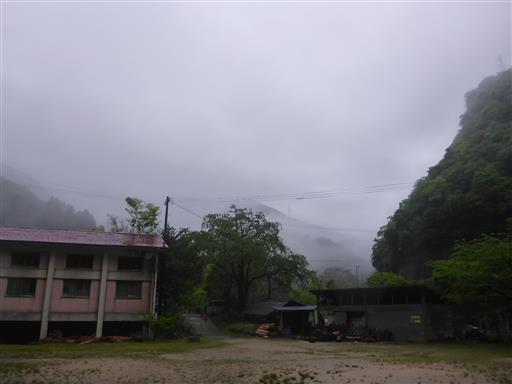
本日も子供たちは暇そう。
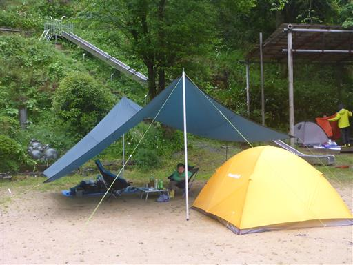
天気が悪いので、本日は雨でもできる観光を実施。
マイントピア別子に行ってみることにする。別子銅山のテーマパークだ。
9時過ぎに到着したが、そこそこ車が停まっている。
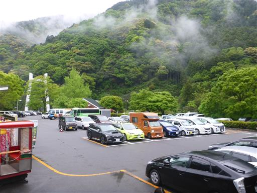
まずは情報収集のため建物の中へ。
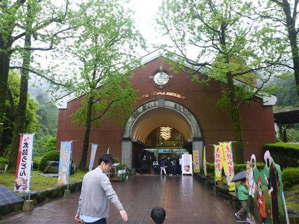
中は土産物屋やレストランなど。
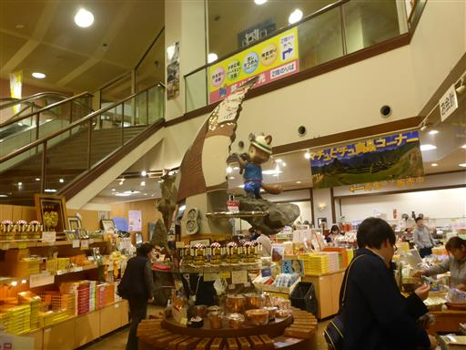
金鉱石。時価2642万円だそうだ。
無造作に置かれているが、重すぎて誰も盗めないのだろう。
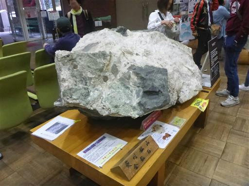
鉱山鉄道に乗って観光坑道まで移動する。先頭車両は電気機関車。
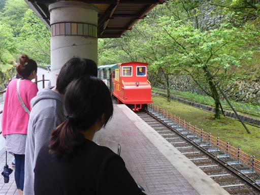
反対方向の先頭車両は蒸気機関車。
かつての鉱山鉄道の路線を400mほどゆっくりと走る。

駅に到着したら、観光坑道まで少し歩く。雨がぱらついてくる。
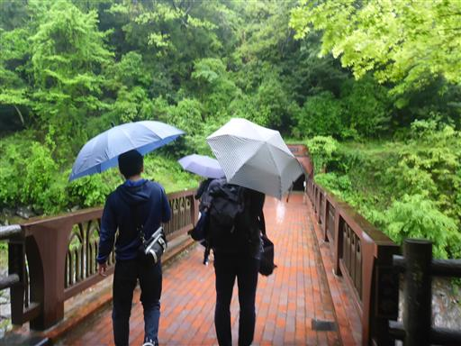
橋からは美しい渓谷を望める。
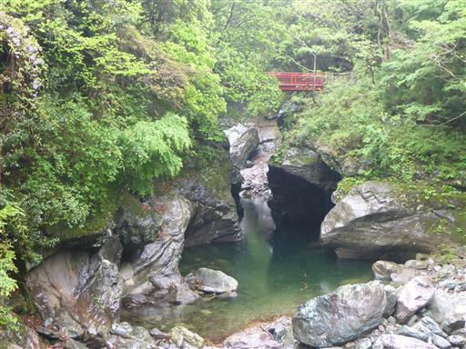
観光坑道入口。
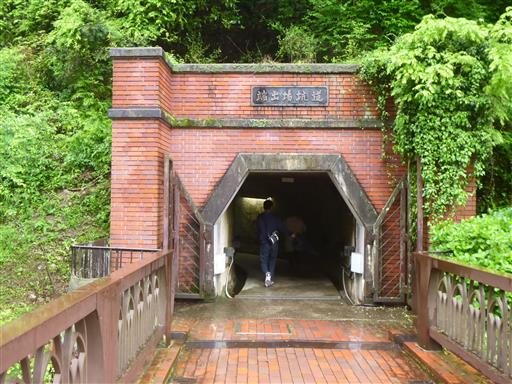
ここは実際の坑道ではなく、旧火薬庫を利用して作られた施設だ。

江戸時代の別子銅山の様子が展示されている。
男性の他に子供を背負った女性も働いていて、結構過酷そうな環境だ。
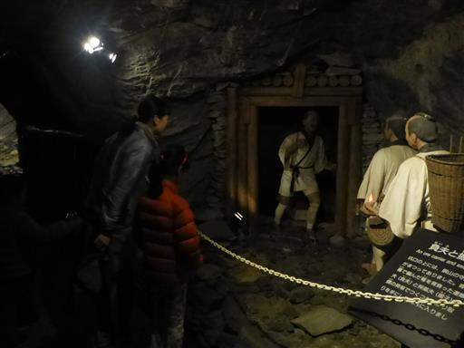
明治以降の鉱山の様子のジオラマ。
あちらこちらに小銭が投げ込まれているのが景観を損なっており、撤去して欲しいところだ。
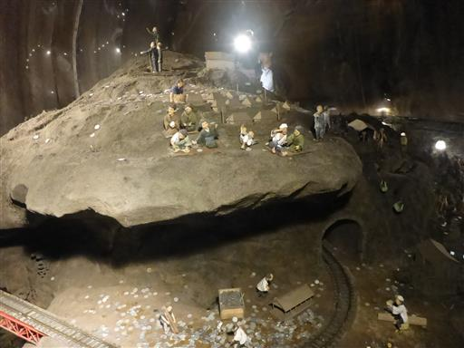
その先は体験ゾーン。遊具が設置されている。
退屈していた子供たちが生き生きと遊び始める。
鉱山とは何の関係もないが子連れには嬉しい施設だ。
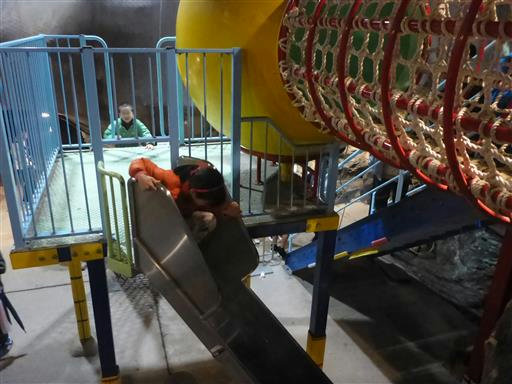
遊具だけではなく、様々な鉱山の体験ができるようになっている。
こちらは鉱石を運んだリフトの模型で、実際に乗って下まで移動することができる。
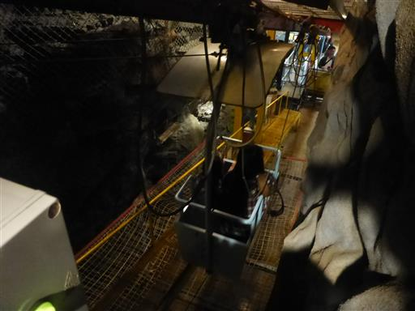
削岩機体験。ボタンを押すと削岩機が揺れて、目の前の岩が砕ける（開く）。
息子はこれが気に入ったようで、何度もやっている。
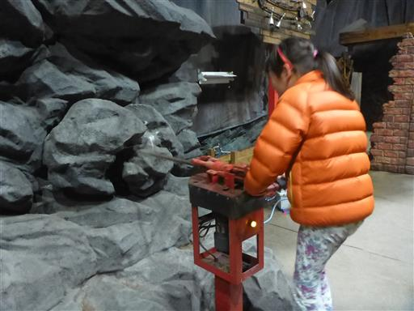
手漕ぎポンプで水をくみ上げる。結構重い。
坑道内の水はこれで排出していた。
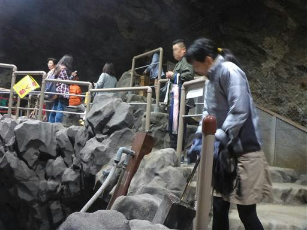
仲持体験。重さは30kgでかなり重い。
女性は30kg、男性は45kgを背負っていたらしい。
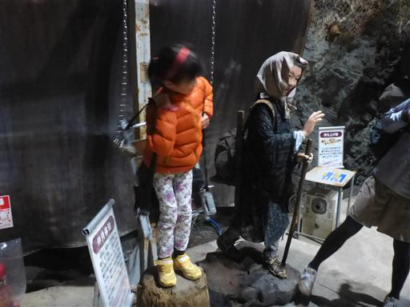
巨大な岩を持ち上げる。こちらは実際は軽い。
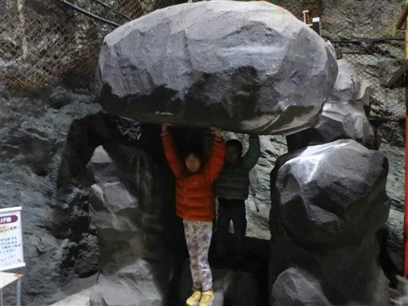
観光坑道を後にする。橋から見える渓谷は巨岩が積み重なっている。
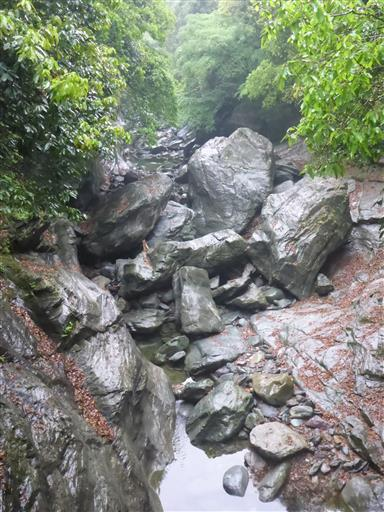
昼食をとったら車で30分ほど離れた場所にある東平ゾーンに行く。
大正～昭和にかけて別子鉱山の採鉱本部が置かれた場所だ。
標高の高い場所のため雲の中だ。
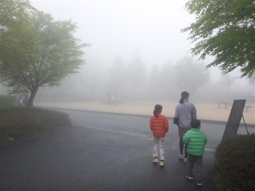
インクライン（資材用ケーブルカー）跡。現在は階段になっている。
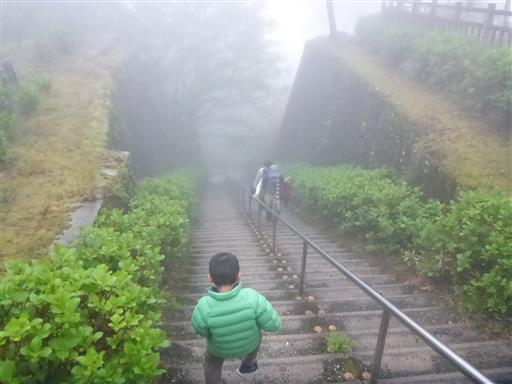
東平索道停車場跡。霧の中浮かび上がるその姿は異様だ。
その風景から東洋のマチュピチュと呼んでいるらしいが、
本日の天気では全貌を窺うのは不可能だ。
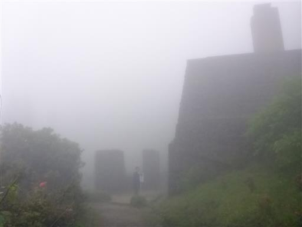
周囲にはドウダンツツジの花が咲いている。
花木園と記載されているので野生ではなく植えられたものだろう。
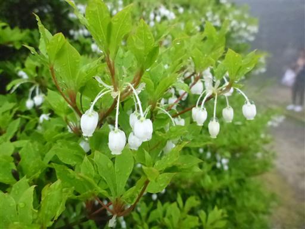
東平貯鉱庫跡。巨大な壁で、運び込まれた鉱石はこの中に貯められていた。

小マンプ。マンプとはトンネルのことらしい。
中には鉱山運搬機器が展示されている。
天気が悪く子供達も退屈してきたので、キャンプ場に帰ることにする。
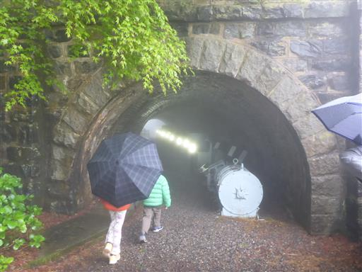
キャンプ場に向かう途中に日帰り温泉施設に立ち寄る。
武丈の湯に行ったが臨時休業だったので、ひうちの湯に行く。
シャンプーなどが有料なのは微妙だが、温泉は広くて気持ちよかった。
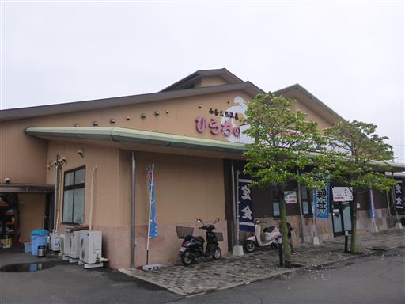
続いてマルナカ氷見店で食料買い出し。四国はこのマルナカが多い。
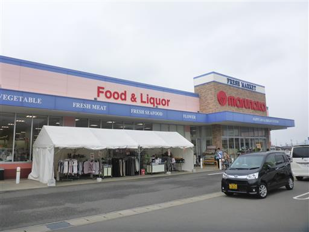
キャンプ場に戻ってくる。雨が止んでようやく子供たちが遊べるようになる。
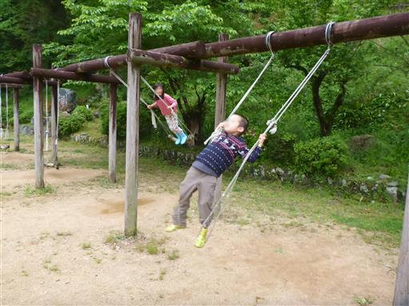
水たまりでアメンボ採集。

思う存分遊具で遊ぶ。久々に体を動かせて満足したようだ。
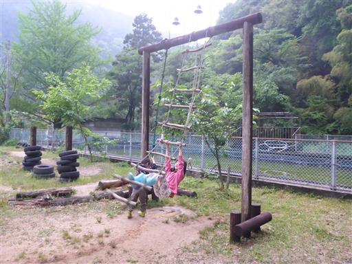
次は近くを流れる川に下りてみることにする。
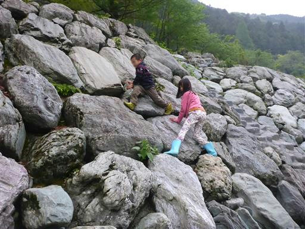
加茂川。石鎚山源流の清流だ。

背後には鯉のぼりが見える。
水量が多く子供達だけで遊ぶのは危険なため、少し川に触れたら引き上げる。
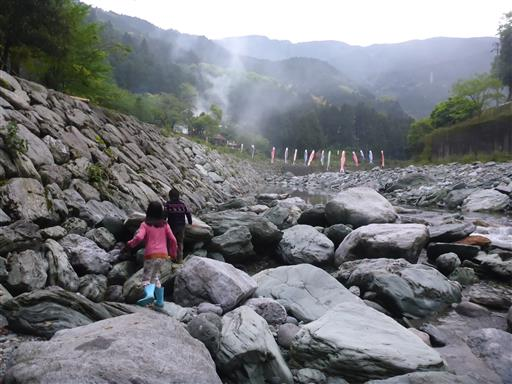
妻が寝不足で体調が悪いため、夕飯は3人で。
明日の登山に備えて早めに寝る。
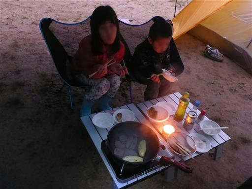